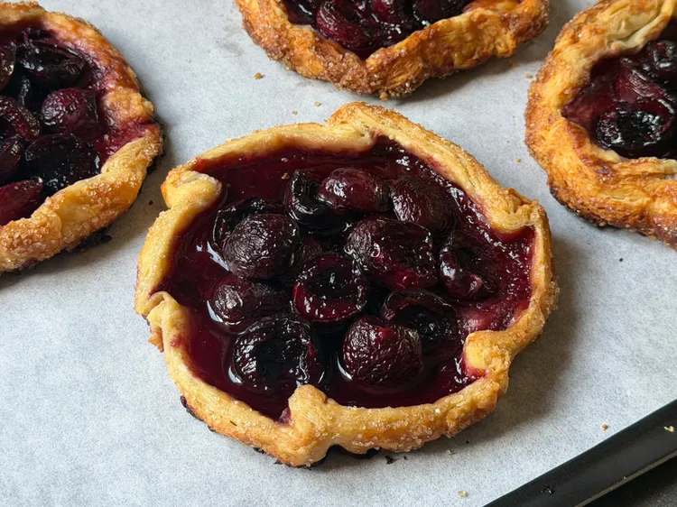

Cherry Pie Recipe

Ingredients
- 3 1/2 cups pitted sweet cherries
- 1/3 cup light brown sugar
- 1 1/2 teaspoons lemon juice
- 2 tablespoons cornstarch
- 2 disks homemade pie dough, or 1 package refrigerated pie dough
- 1 large egg
- 2 tablespoons milk
- 1 tablespoon coarse sugar, such as turbinado or sugar in the raw
- vanilla ice cream, for serving (optional)
Directions
- Combine cherries, brown sugar, lemon juice, and cornstarch in a mixing bowl. Stir until combined. Set aside to macerate.
- Preheat the oven to 375 degrees F (190 degrees C). Line a sheet pan with parchment.
- Roll the pie dough out on a lightly floured work surface to about 1/8-inch thick. Use a 6-inch bowl or round cutter to cut out 4 circles of dough.
- Place dough circles on the prepared pan. Scoop about 1/3 cup of the cherry mixture onto the center of each, then fold the sides of the dough up and over the filling to make a 1/2-inch border.
- Whisk egg and milk together in a small bowl for egg wash; brush pie dough with egg wash and sprinkle with coarse sugar.
- Bake in the preheated oven for 28 to 32 minutes, or until golden brown. Remove and let cool for 5 minutes.
- Serve warm with a scoop of vanilla ice cream.